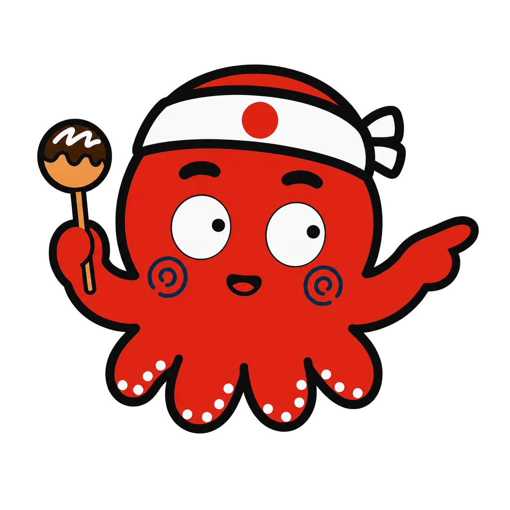

日本語教育・教材
日本語を教える仕事が、すべての出発点です。
外国人が何に困っているかを、毎日ここで聞いています。その質問が、留学支援と Instagram 運用のもとになります。
外国人が何に困っているかを、毎日ここで聞いています。その質問が、留学支援と Instagram 運用のもとになります。

2025年8月、カナダ・バンクーバーへの留学と同時に、オンラインで英語圏の方に日本語を教え始めました。「日本語は難しいけど面白い」と言われるたびに、もっと多くの人に届けたいと思うようになりました。
レッスンで出る「外国人の質問」は、全件スプレッドシートに記録しています。日本の店で何に戸惑うか、留学先に何を求めるか。本人から直接聞いたこの質問が、留学支援と SNS 運用の企画のもとになります。
教材は「作って、出して、数字を見て、直す」を繰り返してきました。同じやり方を、お客さまの学校やお店でも使います。
英語圏の学習者に、英語で日本語を説明。いまも続けている仕事で、留学支援の一番の入口です。
英語話者向けの「実際に使われる日本語」フレーズ集。旅行・日常・関西弁・仕事をテーマに制作しています。
AIと会話して日本語を学ぶアプリ。企画から開発・公開まで自分たちで。
関西弁と標準語の違いを英語で解説。海外閲覧86%。学習者と出会う場であり、Instagram 運用の実例でもあります。

日本語を教える側に向けた発信です
資格のない状態から始めて、月の収入が立つまでにやったこと。体験レッスンの50分の使い方、予約が入らないときの時間帯の考え方、手取りから逆算する料金の決め方、英語で日本語を説明するときの言い回し。自分が試して残ったものだけを書いています。
note を見るこの発信をもとに、下のロードマップを作りました。
これから日本語を教えたい方へ。未経験から副業3ヶ月で自立するまでの「やる順番」を、設計図にしました
プロフィールの4ブロック構成、1分の動画台本、最初の値段、体験レッスンの50分の型、Super Tutor の基準、値上げの全記録。自分でやって数字が動いたものだけを22ページの PDF にまとめ、レッスンで使える教材3点を付けています。無料部分は特設ページで全文読めます。
特設ページで無料部分を読むレッスンの場でしか聞けない質問です
日本への留学を考え始めたら、英語のページをご覧ください。レベルの確認から学校選び、現地の生活まで、英語で相談できます。